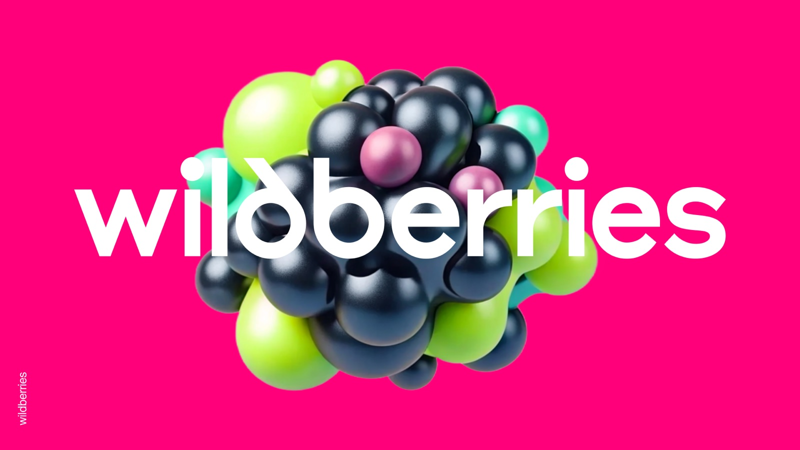
B2C: Маркетплейс
Проблемы в экранах оформления заказа
- Мы провели UX-исследование существующих версий оформления заказов на первом и втором шагах корзины. В ходе анализа выявили множество проблем, связанных с юзабилити и низкой информативностью отдельных блоков.
- Кроме того, старая версия дизайна морально устарела: она изобилует яркими цветами, выглядит перегруженной («шумит») и обладает низкой консистентностью (включая типографику, цветовую палитру, иллюстрации, композицию и отступы).
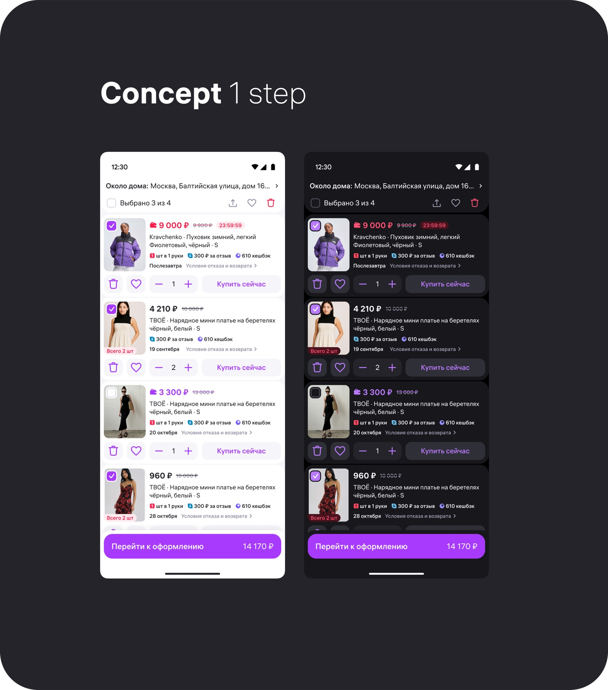
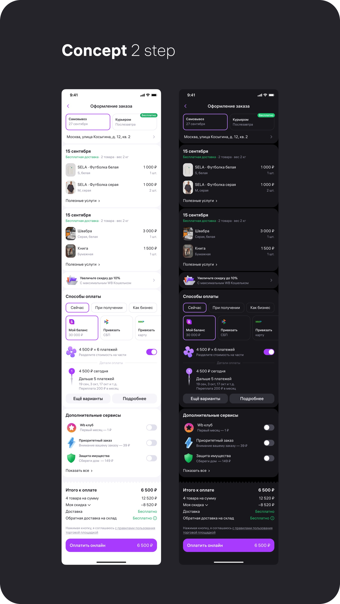
Разработал унифицированный JSON-стиль для иконок в ChatGPT и на его основе создал однородный набор иконок для раздела «Дополнительные сервисы». Это позволило добиться единообразия в дизайне и упростить дальнейшую работу с иконками.
Первый шаг корзины: подготовка концептов и UX-исследование
В рамках работы над концептом были внедрены следующие улучшения:
- Стандартизация типографики
- Уменьшил количество используемых стилей почти в 2 раза (кегль, цвет, интерлиньяж)
- Оптимизация композиции
- Увеличил плотность элементов, благодаря чему число отображаемых сниппетов (товаров) выросло с 2 до 4
- Значительно расширил viewport, улучшив удобство взаимодействия пользователей с товарами
- Компактный блок с адресом
- Переработал отображение адреса, сделав его более лаконичным. Теперь пользователи сразу видят выбранный адрес без лишних действий.
- Программно реализована бегущая строка с приоритетом улицы и номера дома.
- Улучшение мультивыбора
- Основные действия вынесены наружу, так как сравнительное тестирование показало, что такое решение более интуитивно понятно пользователям.
- Упрощение дополнительных действий
- Функции «Удалить» и «В избранное» теперь доступны прямо внутри сниппета, что упрощает взаимодействие и помогает разгрузить корзину (снизить количество хранимых товаров).
Дополнительно я доработал тексты и смысловые формулировки, изменив некоторые названия. Например, «Пункт выдачи» теперь называется «Самовывоз», а кнопка «Перейти к пополнению» была переименована в «Оплатить онлайн».
E-grocery — продажа товаров повседневного спроса
Быстрая навигация по основным категориям помогает пользователю быстрее найти нужный товар в условиях обширного и разнообразного каталога.
Рекомендация:
Отображать основные категории в виде плиток, чтобы пользователь мог сразу перейти к поиску внутри нужного раздела.
Это решение:
- Упрощает навигацию
- Сокращает время поиска
- Улучшает пользовательский опыт
Такой подход особенно полезен для крупных маркетплейсов и интернет-магазинов с широким ассортиментом.
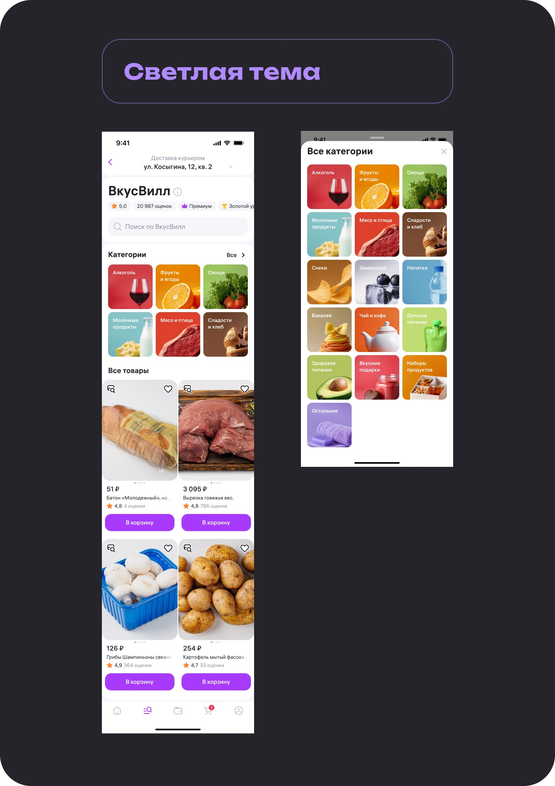
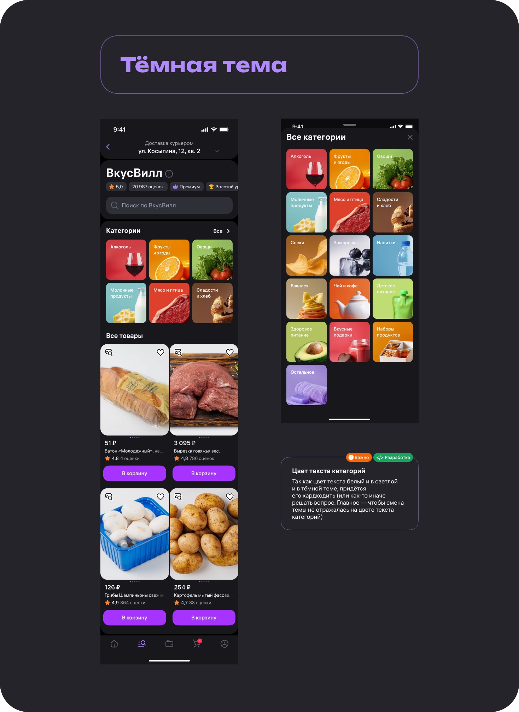
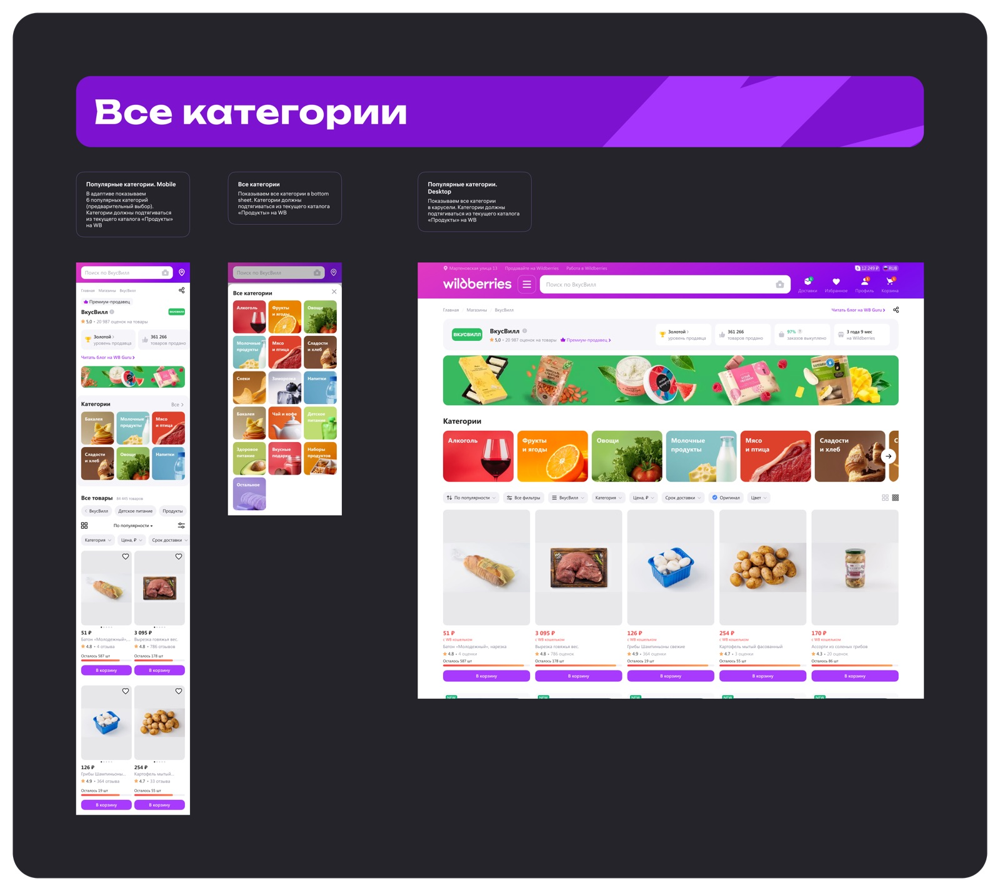
Обновлённый снипет корзины
Деньги
Примерно +200 000 000 ₽ в месяц
Целевые метрики:
ARPU 1 ШК +0.94 %
CR 1ШК – заказ +0.69 %
Контрольные
ARPU +0.43 %
GMV +0.51 %
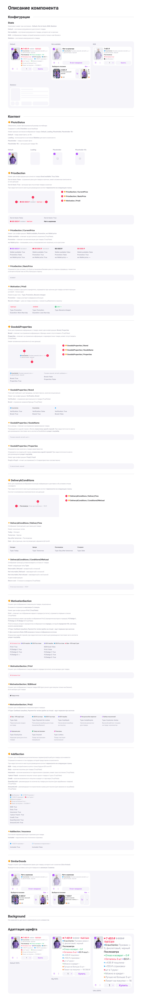
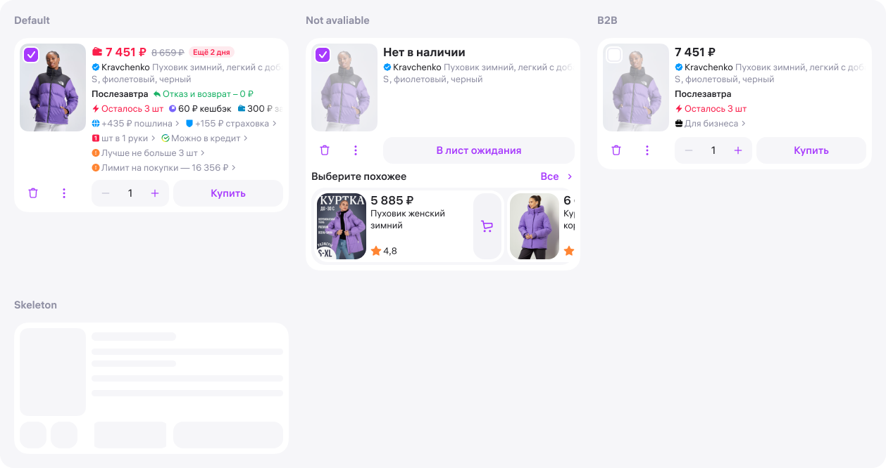
Превью товара из «Корзины»
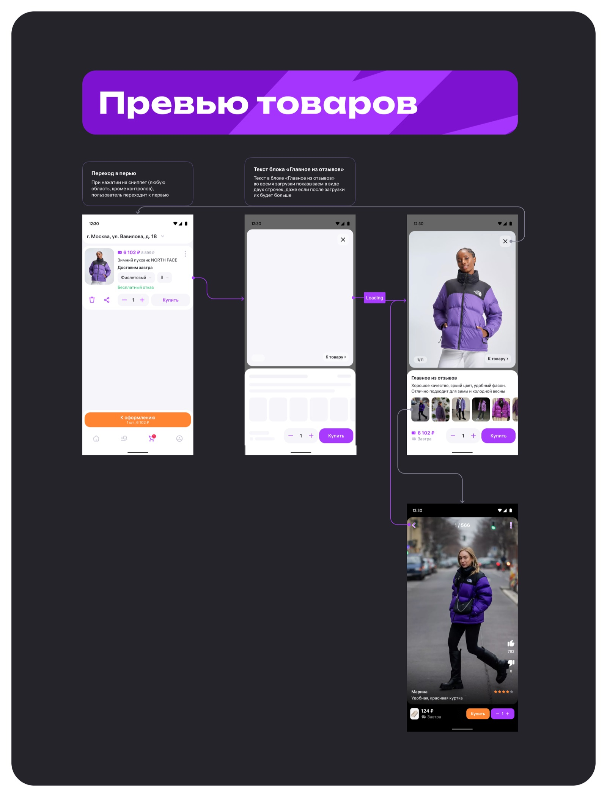
Отправка заказа другому получателю
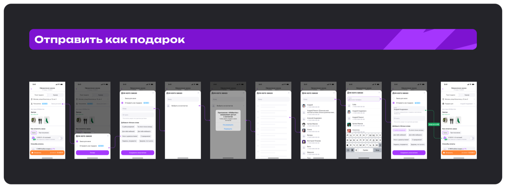
Стандартизация стимулов
Все стимулы были протестированы в A/B-тестировании. Я разделил их на несколько групп с разными приоритетами, где для каждой группы задан свой визуальный стиль.
Соответственно:
- Самые эффективные стимулы выделены более заметно и расположены в верхней части
- Остальные стимулы распределены ниже по убыванию приоритета
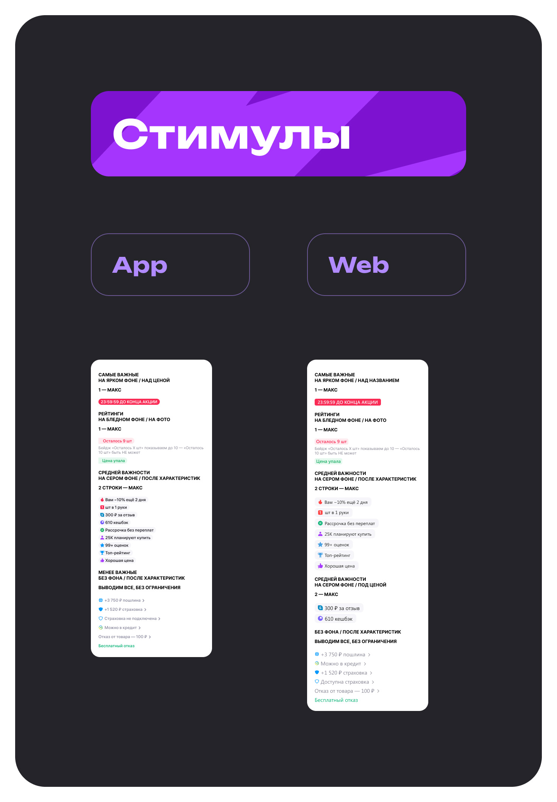
InApp push
Сквозные пуш-уведомления сделаны для того чтобы повысить число заказов курьерской доставки и быстрее разгружать пункты выдачи и склады.
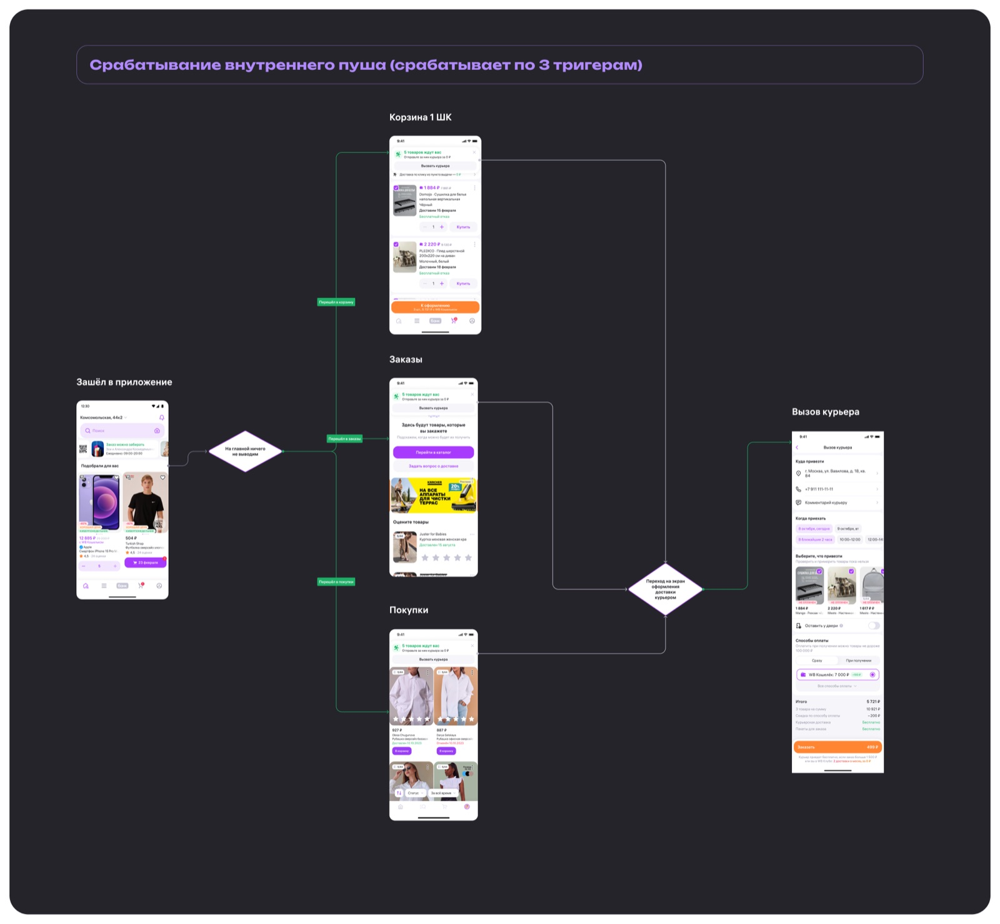
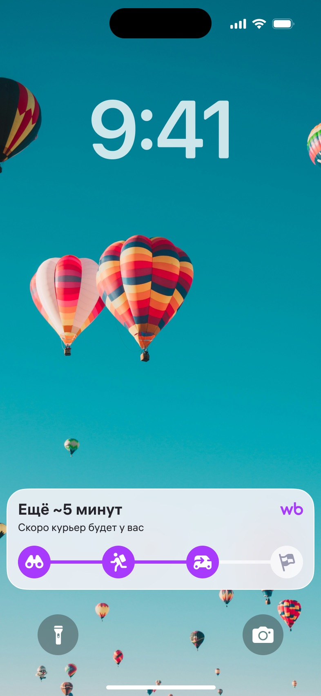
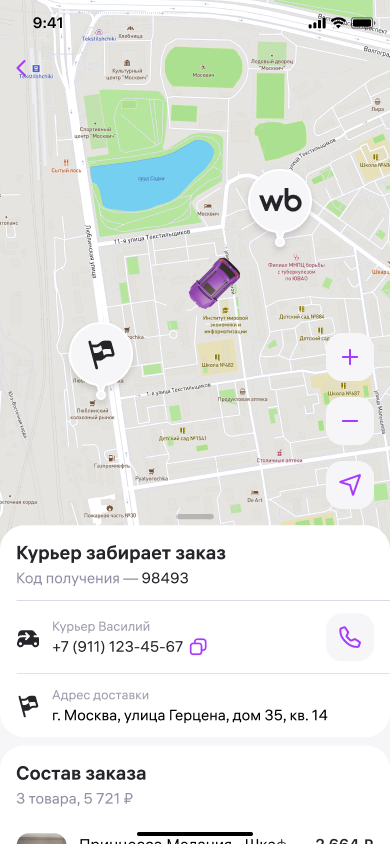
B2B: Портал продавцов
Редизайн раздела «Поставки»
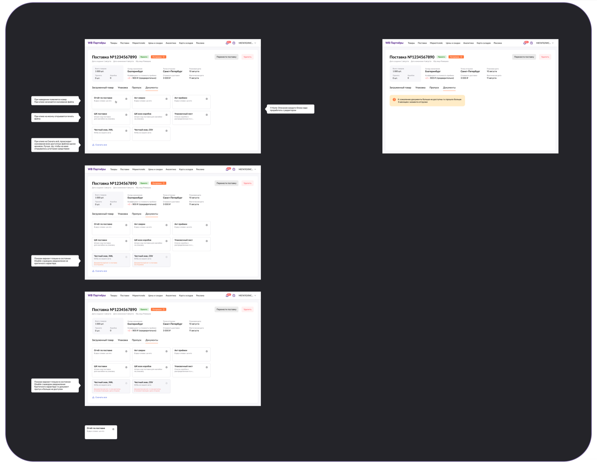
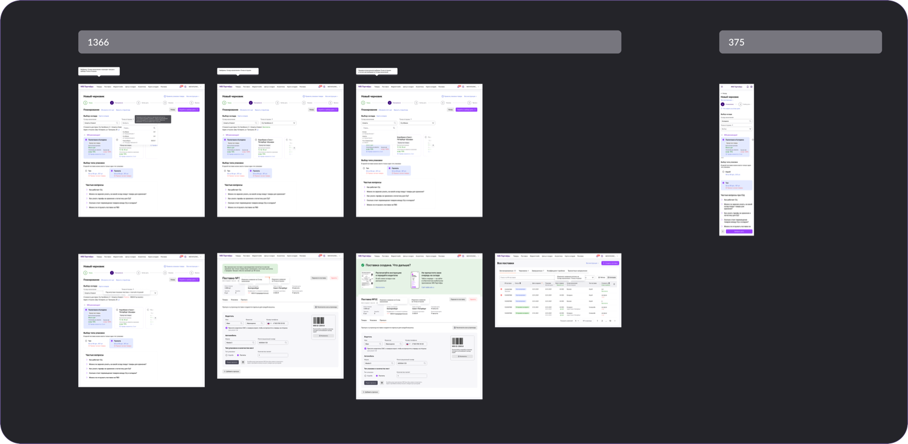
Экран успеха после создания поставки
(Сделано совместно с Ильёй Бирманом)
На этом экране собрана вся необходимая информация о предстоящей поставке.
Это позволяет продавцу:
- Проверить все данные
- Распечатать пропуск
- Выпустить дополнительные пропуска при необходимости
- И конечно же понять статус поставки
- Дополнительно мы добавили инструкцию склада для водителя и подсветили наличие удобного приложения
Результат:
Эти улучшения поддержали ввод новых инструментов: инструкции для склада и мобильное приложение для водителей. Главное — они упростили работу бизнеса, сделав процесс более прозрачным, а также снизил число ошибок при создании поставок.
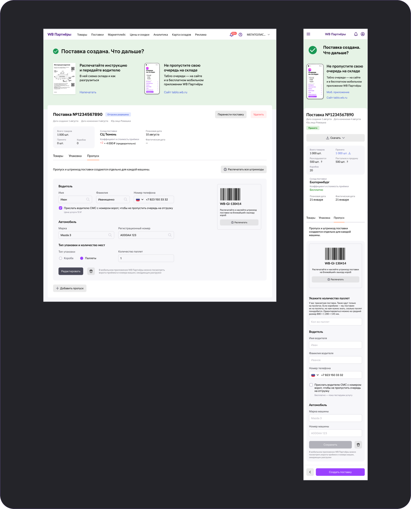
Пропуска на склад для водителя
Проблема:
Поставщики Wildberries сталкивались с неудобством оформления пропусков для водителей. Процесс был неавтоматизированным, требовал ручного заполнения данных и согласования, что занимало время и могло приводить к ошибкам и задержкам доставки.
Решение:
Я разработал специализированный веб-интерфейс, который позволяет менеджерам поставщика в несколько кликов создавать валидный пропуск. Ключевые принципы:
- Минимализм: Только необходимые поля
- Ясность: Интуитивно понятная форма
- Результативность: Мгновенная генерация готового к использованию пропуска
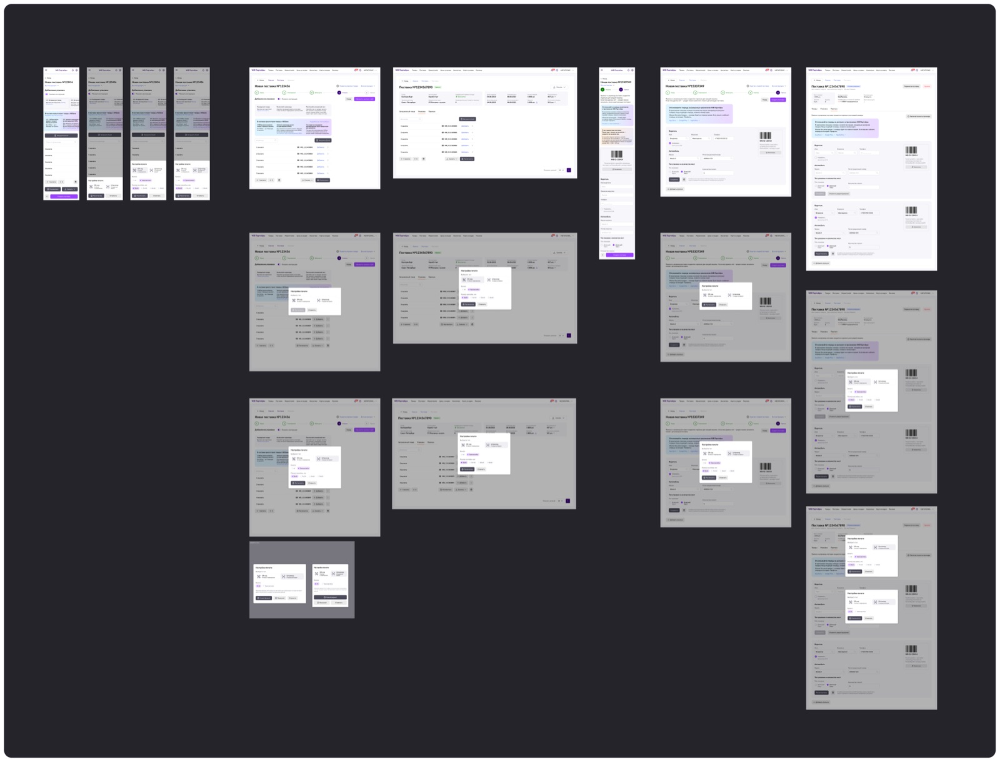
Результат:
- Время оформления пропуска сократилось с 10-15 минут до 30 секунд
- Полностью исключены ошибки, связанные с неразборчивым почерком или опечатками
- Процесс стал круглосуточным и не зависящим от рабочего времени сотрудников склада
Онбординг по работе с разделом
Раздел поставок достаточно сложен для новичков, поэтому для быстрого освоения интерфейса и знакомства с основным функционалом была разработана сквозная система онбординга. При необходимости её можно отключить или запустить повторно. Кроме того, онбординг помог снизить негативный эффект от внедрения новых функций.
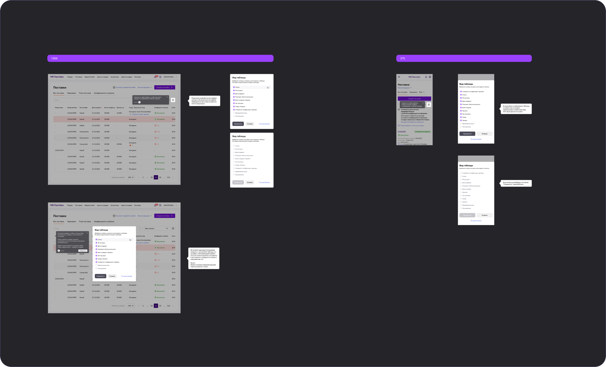